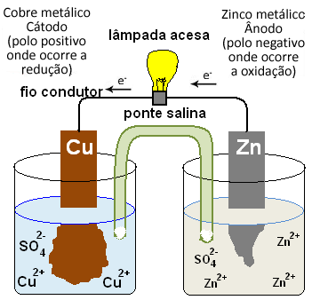

Partícula Elementar
Uma partícula elementar é uma partícula que não possui subestruturas e é responsável pela formação de matéria.
O átomo
A estrutura de um átomo é basicamente formada por três partículas elementares, sendo elas os prótons, elétrons e nêutrons.
Os prótons e nêutrons são constituídos por partículas denominadas quarks, que possuem carga elétrica correspondente a +/- 1/3 e +/- 2/3 da carga do elétron.
Elétron
Partícula de menor massa carregada negativamente. No átomo, o elétron é encontrado na nuvem eletrônica.
Próton
Partícula de carga possitiva com massa ligeiramente menor que a do nêutron. O próton geralmente é encontrado no núcleo.
Nêutron
Essa partícula não possui carga. Encontrado no núcleo atômico, o nêutron possui a maior massa das particulas elementares.

Mas por quê essas partículas são importantes?
O estudo das partículas elementares ajuda a compreender as estruturas das matérias e como desenvolver tecnologias com elas.
De acordo com a organização dessas partículas, diferentes átomos são formados com diversas propriedades. Essa distribuição é responsável, por exemplo, pelos compostos iônicos, metálicos e covalentes.
Compostos iônicos
Formados por elementos químicos metálicos e ametálicos com grande diferença de eletronegatividade entre si, geralmente, não conduzem eletricidade. Mas quando estão presente em solução iônica, são capazes de conduzir corrente elétrica. Pilhas são feitas com essa tecnologia.

Veja: Pilha de DaniellCompostos Covalentes
Os compostos covalentes são formados por átomos ametálicos com eletronegatividade semelhantes. Geralmente são isolantes por não possuírem cargas livres para a condução de corrente elétrica.
O plástico é um exemplo de polímero formado em sua maioria por ligações covalentes (veja estrutura do plástico). Revestimentos plásticos são comuns em equipamentos eletrônicos. Afinal, ninguém quer usar o computador levando choque!
Computador revestido de plástico
Compostos Covalentes
São formados por ligações entre elementos metálicos.
Geralmente, esses átomos possuem até três elétrons de valência. Com essa distribuição, esses elétrons não se encontram fortemente ligados a um átomo específico, então, em particular no sólido, eles se encontram “livres” para se movimentar ao longo de todo o metal. Assim, esses compostos são responsáveis pela condução de eletricidade. Sem eles, você não estaria lendo esse blog agora.
Rua iluminda pela eletricidade conduzida pelos fios feitos de compostos metálicos
Um pouco de história...
Descoberta do Elétron
A descoberta da existência do elétron ocorreu com o trabalho de vários cientistas pesquisando sobre a estrutura da matéria. Porém, no final do século XIX, J.J. Thomson, com suas experiências utilizando raios catódicos, identificou o elétron. (Com isso, Thomson ganhou o Prêmio Nobel da Física em 1906).
Descoberta do Próton
Durante um experimento com raios catódicos, em 1886, o físico Elgen Goldstein, detectou um feixe de luz indo em direção oposta ao dos elétrons, propondo que existem partículas com cargas opostas à do elétron. Em 1904, Rutherford detectou essas partículas durante um experimento com gás hidrogênio e as nomeou de prótons.
Descoberta do Nêutron
Rutherford antes da descoberta do nêutron já havia previsto a existência dessa partícula. Porém, somente em 1932, o físico James Chadwick, utilizou a conservação da quantidade de movimento e realizou uma experiencia que comprovou a existência do nêutron. (Os nêutrons são utilizados em reatores nucleares. Os nêutrons térmicos (com pouca energia cinética) bombardeiam núcleos instáveis, liberando uma enorme quantidade de energia que é utilizada para a geração de energia elétrica).
Propriedades das Cargas Elétricas


Lei de Coulumb

Charles Augustin de Coulomb (1736 – 1806)
Até por volta do ano de 1785, os estudos do eletromagnetismo eram exclusivamente experimentais. Cerca 100 anos da formulação das 3 Leis de Newton (que permitiram a previsão matemática do movimento), foi possível fazer o mesmo com o eletromagnetismo. Charles Augustin de Coulomb foi o primeiro a criar uma formulação matemática descrevendo como a força elétrica atuava em um objeto.
Coulomb queria descrever o movimento das cargas elétricas, e para isso, utilizou a segunda Lei de newton (∑ F = ma), onde com a aceleração poderia descrever a trajetória (ou velocidade) em função do tempo. Logo eram necessárias as forças que atuam sobre a carga para encontrar a aceleração.
Para determinar as forças Coulomb utilizou uma balança de torção (As medições eram precisas). E com isso, conseguiu medir a força elétrica entre duas cargas elétricas em várias distâncias diferentes.
Balança de Torção
Coulomb então percebeu que a força entre duas cargas elétricas se comportava muito parecida com a força Gravitacional entre dois corpos. Coulomb então definiu que a força elétrica entre duas cargas é proporcional ao modulo do produto das cargas, vezes uma constante e inversamente proporcional ao quadrado da distância.